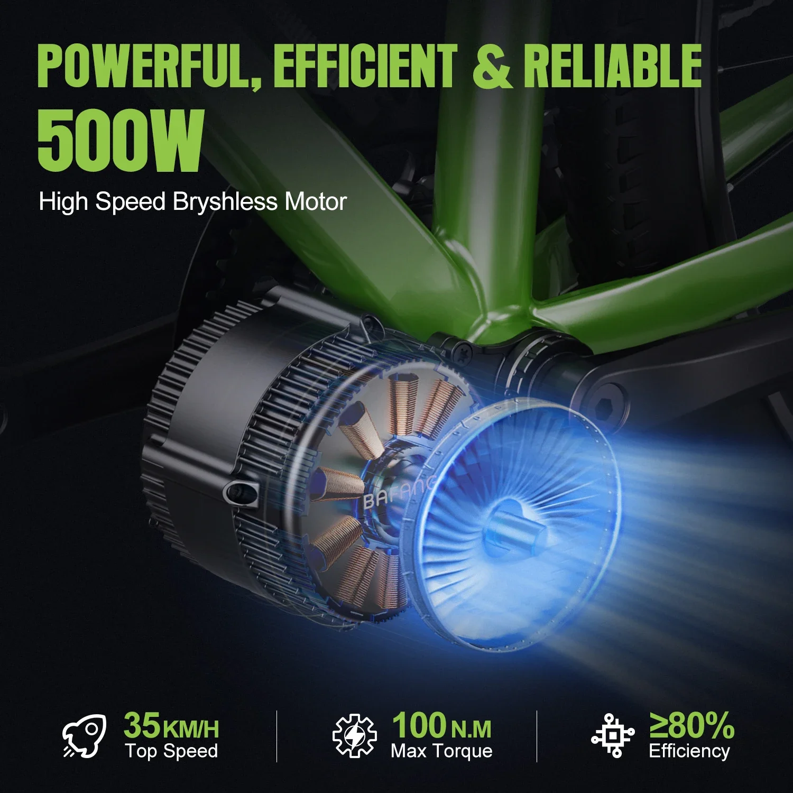
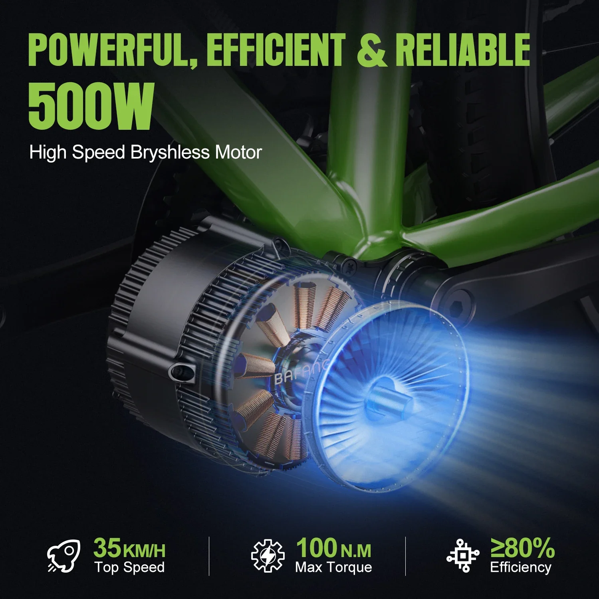
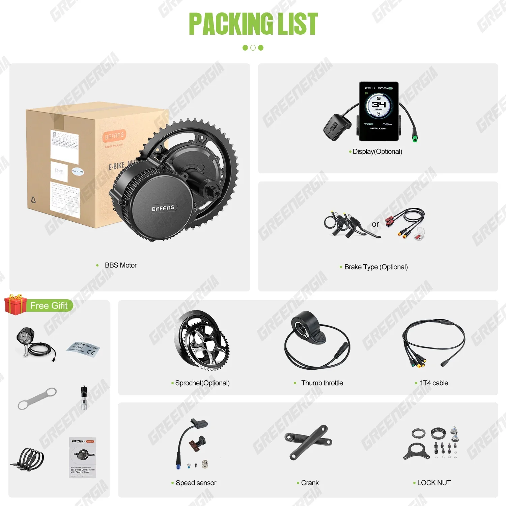
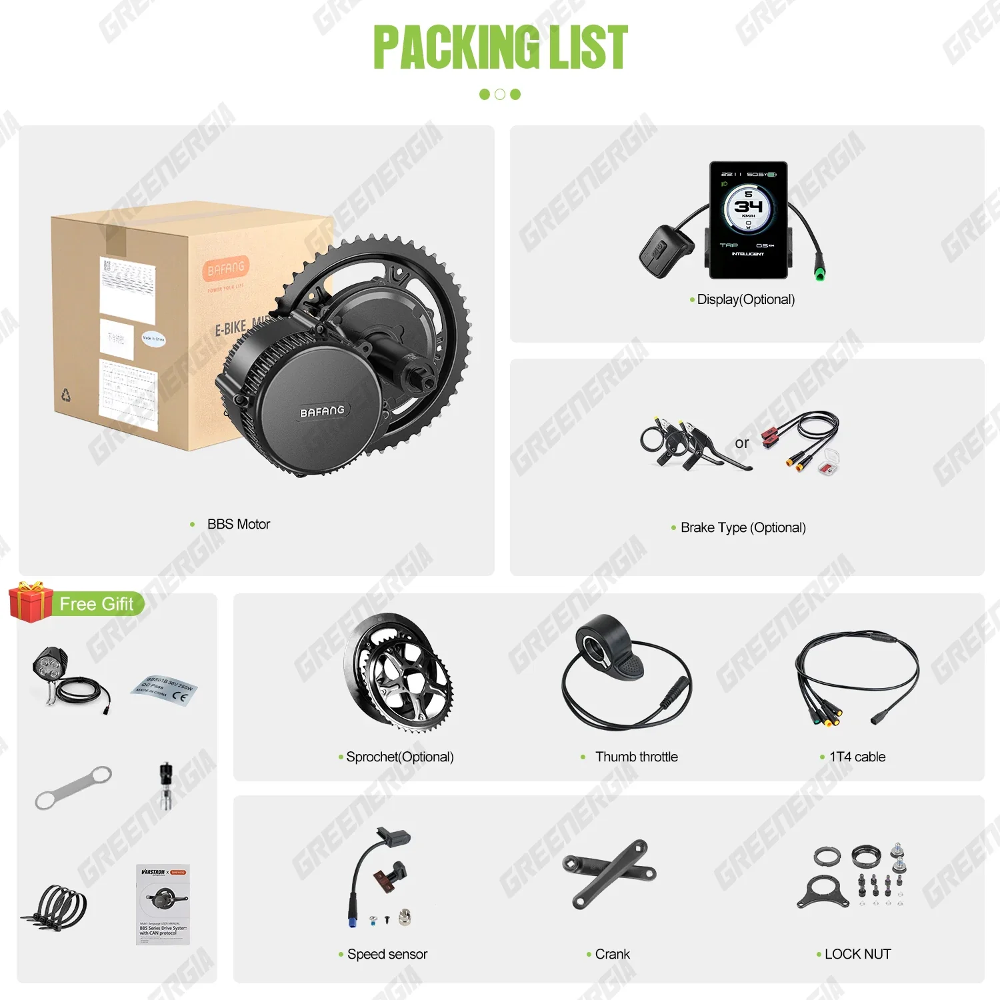

 


BAFANG BBS02B Børsteløs 48V 500W Midterdrevsmotor Elcykel Konverteringssæt med 20Ah Lithium Batteri
Giv din cykeloplevelse et nyt niveau med Bafang CAN 48V 500W børsteløs midtdrevs eBike-motor. Dette kraftfulde konverteringssæt forvandler problemfrit din traditionelle cykel til en højtydende elcykel, klar til at erobre bakker og tackle udfordrende terræn.
Den robuste BBS02B-motor leverer imponerende 500 watt effekt og giver ubesværet assistance ved hastigheder op til 45 km/t. Dens børsteløse design sikrer jævn drift og exceptionel effektivitet, hvilket forlænger din rækkevidde og minimerer vedligeholdelse.
- Kraftfuld 500W motor til en spændende tur
- Børsteløs teknologi for jævn ydeevne og forlænget batterilevetid
- Midtdrevsplacering for optimal kraftfordeling og afbalanceret håndtering
Kombineret med det medfølgende 20Ah litiumbatteri får du en forlænget rækkevidde og friheden til at udforske længere. Oplev glæden ved ubesværet pedalering, overvind stejle stigninger med lethed, og ankom til din destination med masser af energi.
Bafang CAN 48V 500W Motor Brushless Mid Drive eBike Engine BBS02B er et kraftfuldt og alsidigt konverteringssæt designet til at forvandle din cykel til en elcykel. Denne mid-drive motor tilbyder en jævn og naturlig køreoplevelse, der problemfrit blandes med din pedalkraft.
- Børsteløs motor: Denne type motor leverer effektiv kraftoverførsel og støjsvag drift, hvilket sikrer en behagelig tur.
- CAN-grænseflade: Denne grænseflade muliggør avanceret kommunikation mellem motor, display og batteri, hvilket muliggør præcis kontrol og ydeevneovervågning.
- Mid-drive placering: Motoren er placeret midt på cyklen, nær kranksættet. Denne placering giver optimal vægtfordeling og effektiv kraftoverførsel til pedalerne, hvilket efterligner en naturlig kørefornemmelse.
Bafang CAN 48V 500W Motor Brushless Mid Drive eBike Engine BBS02B er bygget med robuste specifikationer for pålidelig ydeevne:
- Spænding: 48V
- Effekt: 500W
- Displaykompatibilitet: Motoren understøtter kompatible displays for at give ryttere information i realtid om hastighed, distance, batteriniveau og andre vigtige data.
- Batterikapacitet: Dette sæt indeholder et kraftfuldt 20Ah litiumbatteri, der giver rigelig rækkevidde til længere ture.
Oplev de mange fordele ved at opgradere din cykel med dette konverteringssæt:
- Ubesværet pedalering: 500W-motoren reducerer pedalindsatsen betydeligt, hvilket gør bakker og lange distancer nemmere brise.
- Øget rækkevidde: Lithiumbatteriet med høj kapacitet giver længere rækkevidde til dine ture, så du kan udforske længere uden at bekymre dig om at løbe tør for strøm.
- Forbedret ydeevne: Nyd forbedrede hastigheds- og accelerationsmuligheder, og forvandl din daglige pendling eller fritidstur til en spændende oplevelse.
- Miljøvenlig transport: Reducer dit CO2-aftryk ved at vælge en mere bæredygtig transportform.
Dette konverteringssæt er designet til nem installation på kompatible cykler. Den omfattende instruktionsmanual guider dig gennem processen og sikrer en problemfri og vellykket konvertering.
Når det er installeret, skal du blot vælge det ønskede assistanceniveau ved hjælp af de medfølgende displaykontroller og nyde bekvemmeligheden ved elektrisk cykling. Husk altid at følge lokale regler og sikkerhedsretningslinjer, når du bruger en elcykel.